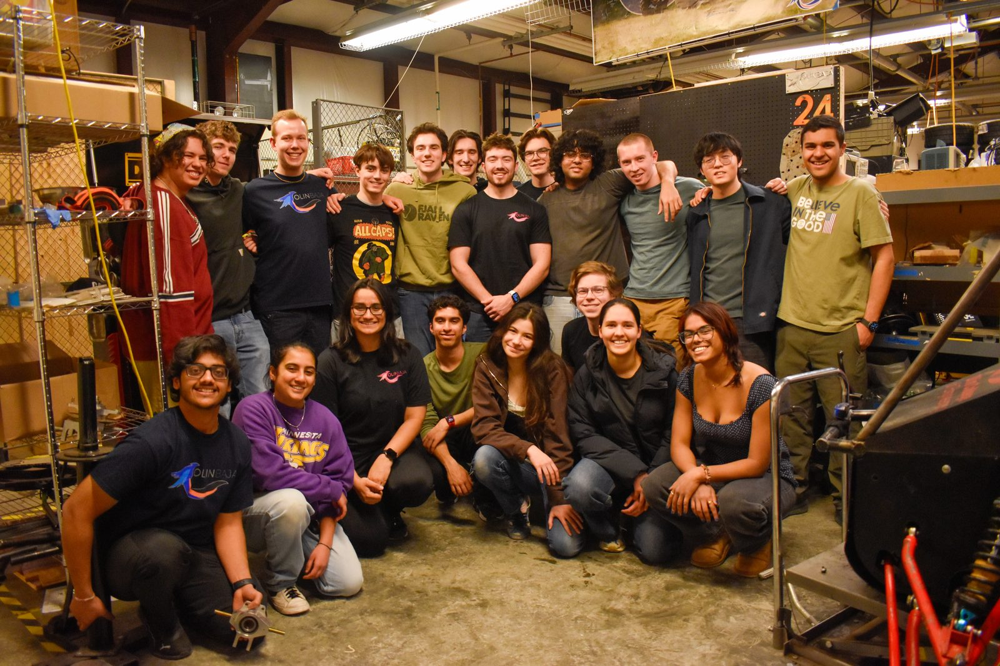
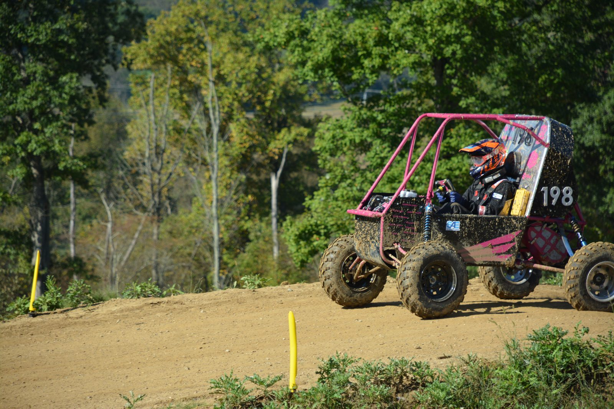

Olin Baja SAE Project Manager
Leading a 50+ member team designing and building an off-road racing vehicle.
Overview
Since May 2026, I've been Project Manager of Olin Baja SAE, an engineering club that designs and manufactures a custom off-road racing vehicle for the Baja SAE collegiate competition series. I joined the team in September 2025 on the suspension sub-team (see Baja SAE Suspension). The previous Project Manager and leadership team chose me as the next Project Manager because of my commitment to the team, my leadership, and my reliability.
I set out to change several things:
- Make the team data-driven. I'm putting a stronger emphasis on the electrical team building a comprehensive sensing system, so we can tune things like the CVT and suspension before competitions.
- Back design decisions with research. I push for research and credible sources behind every design decision.
- Treat Baja as real engineering experience. I'm framing Baja as an opportunity for undergraduates who want industry-like engineering experience: tough design reviews, longer timelines, failure analysis, and fatigue, which most short-term college projects don't require.
- Bring in more industry partners to teach members about design, manufacturing, and more.
My role
I lead a team of 50+ members through the full vehicle design and manufacturing cycle. The role combines team management, industry outreach, fundraising, public speaking, event planning, and gathering team feedback.
What I did
I led fundraising campaigns and secured 9+ sponsorships from industry partners, and I created and managed the team's social media presence and website.
I organized logistics, travel, and accommodations for 50+ members attending the Baja SAE competition in Ohio in September 2026. I also organized technical presentations and lectures from industry professionals, creating networking and employment opportunities for team members.

Results
- Leading a team of 50+ members through the full vehicle design and manufacturing cycle
- Secured 9+ sponsorships from industry partners
- Took 50+ members to the Baja SAE competition in Ohio in September 2026
- Placed 46th overall and 25th in the maneuverability event at the 2026 Ohio competition
What I've learned
I've learned strategies to keep people motivated, like reaching out to members individually and often, and holding frequent, smaller design reviews and decision presentations. I've also learned how to organize the team and set a meeting schedule that works: not so many meetings that people stop showing up, but not so few that too little knowledge gets passed on and time is wasted.